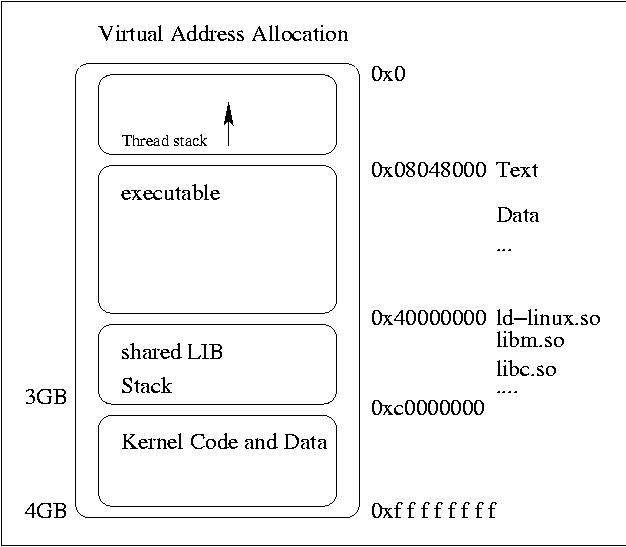
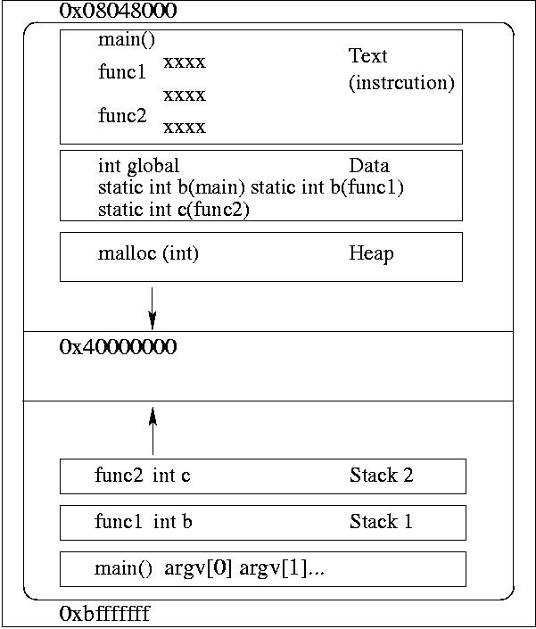
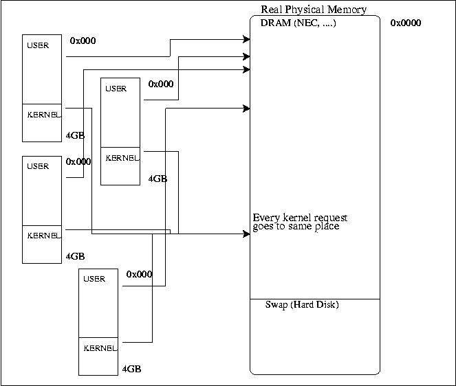

說穿了，寫程式就是在建造(build)一個二位元檔(binary)，好像在 畫畫一樣，把一個image預先保留一些空間，於是我們需要宣告，例如 char message; 在執行檔內宣佈說我要一個8bit的空間，給我保留下來。 需要compile(編輯)成一個特殊檔案，這是一個二位元檔也是OBJ檔。 用gcc編譯C語言所得到的執行檔，不光只有CPU的指令而已， 這個執行檔內還有很多的資訊是在裡面的， 就像音樂檔有mp3, wav...圖形有jpg,gif...等格式，在OBJ執行檔也有很多 格式COFF, ELF...等等， 在最後一道編譯過程中，linker ld會偷偷放一堆資訊進去可執行檔。 例如尤其是當我們有好多個compile後等待連結的.o 這種relocatable檔， 既然這些檔裡面變數或函式名的相對位置只是自己這個.o檔的相對位置 就有一些資訊是要告訴link editor怎樣修改section的內容， 來做relocate也就是做位址的重新參照以便合成一個新的可執行檔。
一個obj檔有兩個重要的時期， 一個是正在連結(link)的時候，也就是躺在硬碟時的樣子。 一個是正在執行(execute)的時候，也就是躺在記憶體時的樣子。 我們常講的ld linker其實是叫link editor， 最後編譯的一道手續ld 把該有的資訊寫進可執行檔。 如果是static link那麼就會去找出libxxx.a的函式庫檔， 把想要的程式碼片段拷貝一份進可執行檔並且做relocation後， 把跳來跳去的參照寫進可執行檔， 這個檔就可以執行。
相對於靜態連結(static link)拷貝原有的程式碼寫進可執行檔， 動態連結並不這麼做，linke editor把一些資訊寫進可執行檔而已 例如需要的程式庫名函數名等等， 最後執行時，必需呼叫dynamic linker來做program intepreter， dynamic linker會根據需要的函式庫名稱把想要的函數名字， 創造一個可執行的image放到記憶體， 所以執行有動態連結的執行檔， 最後通常是由OS的exec系列的system call與dynamic linker如ld.so連手完成。 dynamic linker會做
1.把可執行檔的東西加到process image 2.把shared obj需要的東西加到process image 3.做relocation |
本來這些OBJ檔裡面的虛擬位址應該是跟檔案的位址有相對應的位移(offset)， 而檔頭通常是0x08040800，這是絕對虛擬位址，但這只適合可執行檔， 例如Linux extuable file通常是
file offset virtual address =========== =============== 0x0 0x08048000 0x100 0x08048100 |
現在最常用的是一種叫ELF格式(executable and linkable format) 的執行檔，ELF定義了一些變數與資訊使得動態連結更有彈性， 一個ELF的二位元檔照spec 1.1版的說法 有6種 下列是較常看到的
relocatable : 這就是我們編譯時產生的.o檔 executable : 這就是我們最後的可執行檔 shared obj : 這就是在/lib /usr/lib下的那些可以動態連結的函式庫檔 core : Core Dump時產生的檔案 |
一個ELF OBJ檔隨著它存在的時期有不一樣的需求與組成名詞， 在要連結linking時期躺在硬碟， 包含了
ELF header program header table (可以不要) section 0 section 1 section 2 section 3 section ... section n section header table |
program header table描述了一個segment的資訊，segment跟section 不太一樣是屬於程式執行期的元素， 所以在程式執行時期是必要的， 在連結時期是不必要的， 所以如果你的程式不做連結動作只要有program table就好， section header table就是一個索引表來記錄各個section的索引
sections就是把需要的資料根據屬性用途分門別類後的小集合， 有.bss .data .init .debug .dynamic .fini .text ........， 其中比較重要的
.text 裡面就是真的CPU指令 .bss 放著沒有initialize的data 主要是我們宣告的global與 static變數 .data 放有initialize的data |
我們寫程式用到的函式名，變數名散在各個source code檔案時 須要一個參照(reference)的資訊做連結 這些名字symbol是準備 給linker來做連結用的，因為東一個obj檔，西一個obj檔， 要把這些傢伙的程式碼拉來湊在一塊，就要靠symbol來做辨識， string table藏了一串很多的字串每個用Null來分開 每個就是symbol與section的名字。 symbol table是一個表藏了將來要定址或重新定址所要的symbol定義 與參照資訊。shared lib的Obj檔還有.dynsym這個section裡面藏了 dynamic symbol table用來動態連結用. 另外你如果要將來的程式能讓debug工具來用，編譯 時需要加個-g這個選項，它會根據symbol table 還有string table放 進debug所需要的資訊給obj檔， 這樣的資訊現在大都用一種叫stab的格式存放，這也會長大執行檔。
在ELF不同的檔案型態裡ELF定義的資訊該有的通通都有每種都要有， header, section......只是這裡面的值或有不同而已。
Linux通常要從一個_start這個函式開始而不是main開始，_start後來會去叫 main， 所以如果要精簡的話， 就不要用gcc編譯直接寫組語用_start就好了。 另外像section header table如果你不需要做連結動作這也可以拿掉， 還有可執行檔的symbol table等， 我們其實可以把這些全部拿掉，不過這要用組語並且用nasm來建造我們的 執行檔。其實還有很多東西，這就是為什麼即使我們根本就沒呼叫任何函數， 做成的動態檔，用ldd看一定有ld-linux.so libc.so了。
而一個躺在記體中的一個process image，如圖
ELF header program header table segment 0 segment 1 segment 2 segment ... segment n section header table (可以不要) |
在Linux上面的虛擬記憶體使用有這樣的範圍
user area 0x0 ~ 0x0bffffff -> 3GB kernel area 0x0c000000 ~ 0xffffffff -> 1GB |
int global;
static int func1 ()
{
static int b;
int *c;
int d;
func2();
return 1;
}
int func2 ()
{
int c;
static int d;
return 2;
}
int main()
{
int a;
static int b;
int init = 3;
func1();
return 3;
}
|
Figure 4-1. i386 Linux的執行image

Figure 4-2. 從C角度看的image

kernel code與data當然是躺在實體記憶體中， 所以實際上都還要經過page table轉成實體位址。 在0x0 ~ 0xbfffffff中的page table， 每個process有每個不同的page table， 但在0xc0000000以下的page table， 則大家都一樣。
Figure 4-3. 實體記憶體與虛擬記憶體的關係
